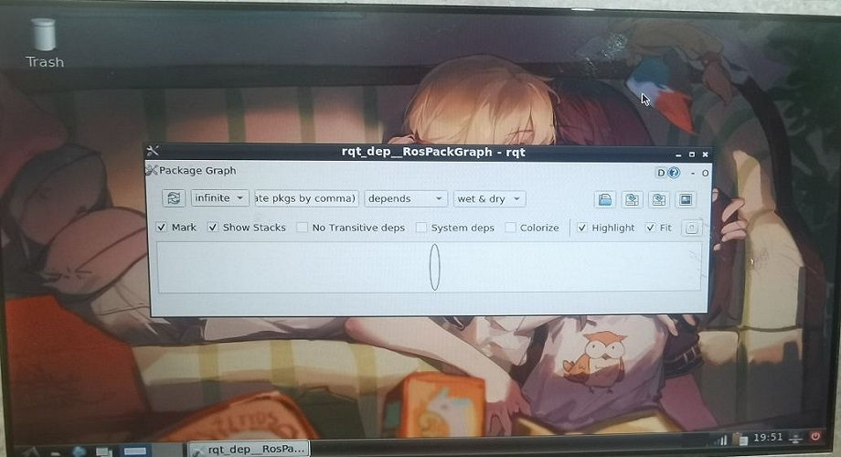

客户端使用SSH与服务端相连，通过SSH执行可视化程序时，将显示输出显示在服务端的显示器，而非客户端。
0x0 前言----这是什么需求？
听起来，这个需求似乎是这样的？

可能有人会说：那干嘛不直接在服务端执行程序呢？
仅仅针对这个需求而言，真的好有道理...
但是事实是：服务端是一台SLAM小车上的嵌入式设备，客户端是我的电脑，我需要修改小车中的代码，并观察算法效果。
我是通过vsc来和服务端相连，直接在vsc的terminal里执行程序。但是遇到需要输出图像的程序时，会出现This application failed to start because no Qt platform plugin could be initialized. Reinstalling the application may fix this problem.这样的错误。
很显然，SSH并不是一个带有可视化显示的终端，但是我又不想把输出转发回客户端，而是希望直接显示在服务端的HDMI显示器上。
0x1 解决过程
- 找来一个屏幕接在SLAM小车上。
- 开启图像化界面
sudo init 5 - 配置好图形界面的用户为当前登录的SSH用户(这点很重要，只有相同的用户才能显示输出)
- SSH配置输出，在vsc的terminal中执行
export DISPLAY=:0.0 - 完成！
0x2 效果展示


当在SSH中执行需要输出图像的程序时，会直接在服务端的HDMI屏幕中输出。可以把export DISPLAY=:0.0写入环境变量中，从而自动配置。